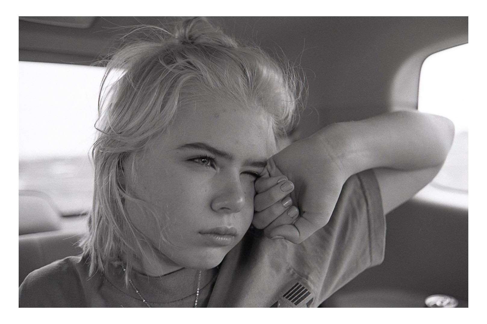

"Sleepy Annie"
35mm Photography // 2018 // Nashville, Tennessee
This was a lucky moment. My family had spent all of my sister's spring break cooped up at home, and she was getting jealous of all her friends who were on vacation. To curb her teenage jealousy, our parents decided to take everyone down to the Nashville Zoo one day. She'd been asleep in the back of Dad's SUV the whole drive down. When we finally parked and I had to wake her up, I prefocused my lens (not an easy thing to do at F/2 @ ~3'), tapped her on the shoulder, knew she would spring up as soon as I did, and I immediately popped back to grab the shot. It's still my favorite photo of her. Knowing your subject and being willing to lose a few frames is usually to your advantage.